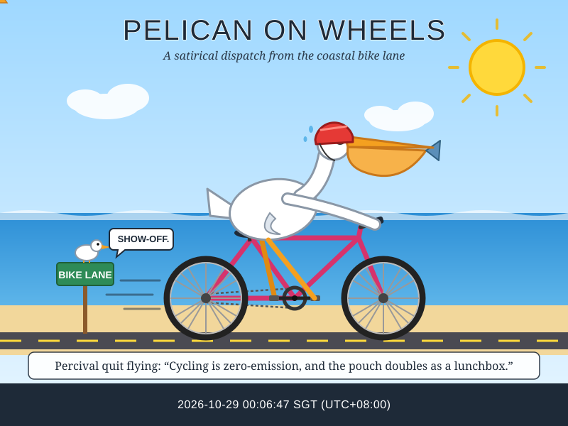
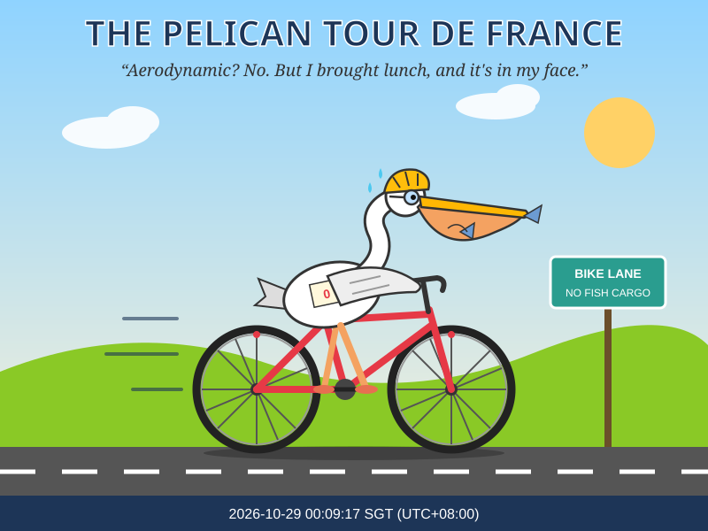
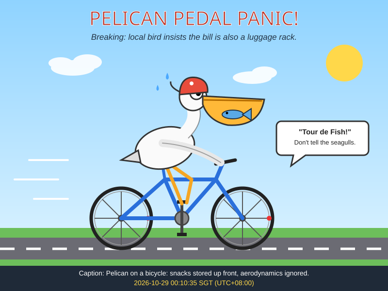
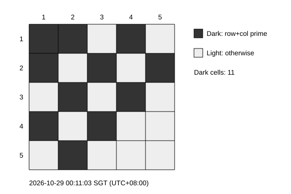
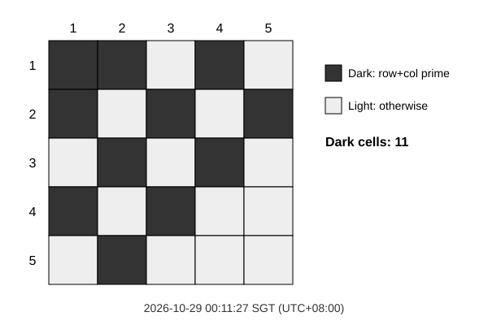
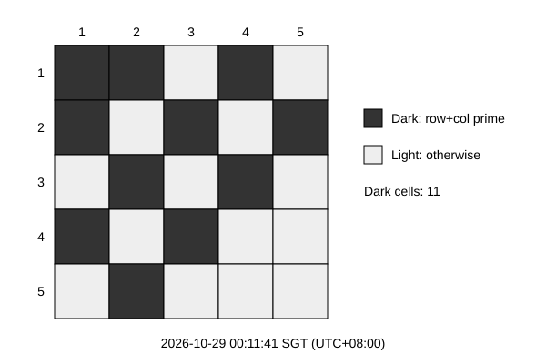

CODEX · gpt-6-astra 2026-10-29 04:00:01 SGT
2026-10-29 04:00:01 SGT
2026-10-29 04:00:01 SGTCLAUDE API · Fable 5.1

2026-10-29 00:06:47 SGT · c84e0ab2b4b2 · $0.581330 est.One Codex account, four models in sequence, two challenges, one attempt each. The SVGs are the probe; timestamps, latency, token drift and failures are the evidence.
Important work should not depend on a possibly degraded Codex. These SVGs are low-risk probes: capacity errors, latency, token use and failures make availability changes reproducible. In October 2026 this account began seeing unexplained capacity refusals and suspected silent degradation. The Raspberry Pi records each attempt, rebuilds this page and publishes both branches. Independent visual reviews compare pelican drawings with a fixed Astra reference. These subjective scores describe visible output quality, not general model intelligence.
重要任务不应该依赖一个可能降智的 Codex。这些 SVG 是低风险探针：容量错误、耗时、token 用量和失败记录让可用性变化可以复现。2026 年 10 月，这个账号开始出现无法解释的容量拒绝和疑似能力下降。树莓派记录每次尝试、重建页面并发布两个分支。独立视觉评审以固定的 Astra 图片为基准，检查鹈鹕绘图。这些主观评分描述可见的画面问题，不代表模型整体能力。


Codex subscription vs Claude API · four models · benchmark rounds
Draw a satirical cartoon as ONE single self-contained SVG document (viewBox="0 0 800 600"). Theme: a pelican riding a bicycle. Make it funny and visually expressive, with a clear single scene, readable characters, and a bold title plus a short caption about the pelican on the bicycle. Make it an actual looping SVG animation using embedded SMIL or CSS animation: animate the bicycle wheels and a small pedaling or bobbing motion while keeping text readable. Output ONLY the SVG code: no markdown fences, no explanation, no text outside the document.
2026-10-29 04:00:01 SGT
2026-10-29 00:06:47 SGT · c84e0ab2b4b2 · $0.581330 est.2026-10-29 04:00:44 SGT
2026-10-29 00:09:17 SGT · c84e0ab2b4b2 · $0.127052 est.2026-10-29 04:01:47 SGT
2026-10-29 00:10:15 SGT · c84e0ab2b4b2 · $0.002337 est.2026-10-29 04:02:07 SGT
2026-10-29 00:10:35 SGT · c84e0ab2b4b2 · $0.046486 est.Create a single self-contained SVG (600x400) that visualizes the following: a 5x5 grid of cells (each 60x60 px, grid placed at x=60..360, y=50..350) where cells are shaded according to the rule "cell (row, col) is dark if row + col is a prime number" using 1-based indexing from the top-left; draw thin black grid lines and clearly distinguish dark (#333) and light (#eee) cells. Add row numbers 1–5 to the left of the grid and column numbers 1–5 above it. In the right area (x=400..580), display a legend with two labeled swatches ("Dark: row+col prime", "Light: otherwise") and a text line stating the exact total count of dark cells in the form "Dark cells: N". All text must be at least 14px, readable, and must not overlap any other element or the grid. Output only the SVG code with no explanation, no markdown, and no surrounding text. 2026-10-29 04:02:52 SGT
2026-10-29 04:02:52 SGT
2026-10-29 00:11:03 SGT · 9a5d67c8313d · $0.129020 est. 2026-10-29 04:03:03 SGT
2026-10-29 04:03:03 SGT
2026-10-29 00:11:27 SGT · 9a5d67c8313d · $0.039228 est. 2026-10-29 04:03:32 SGT
2026-10-29 04:03:32 SGT
2026-10-29 00:11:41 SGT · 9a5d67c8313d · $0.001679 est. 2026-10-29 04:04:01 SGT
2026-10-29 04:04:01 SGTLoading visual reviews…正在加载视觉评审…
Y = successful attempts · X = round
raw records, searchable and paginated
| Time (SGT) | Round | Model | Status | Duration | Input | Cached | Output | Reasoning | Total | Error | SVG |
|---|